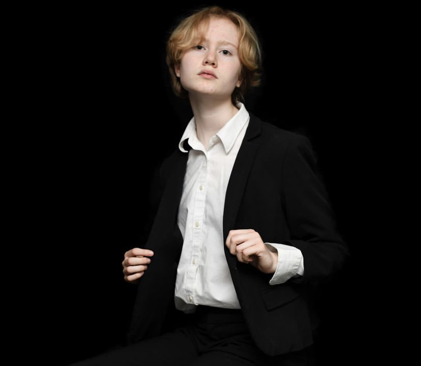
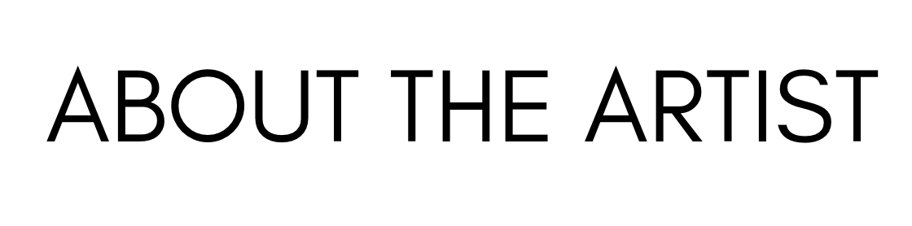

Hello, my name is Julia, and I grew up in Overland Park, Kansas. I'll be attending George Washington University next year to study photojournalism. Photography has been a passion of mine ever since my grandma gave me my grandpa's old camera. At first, I practiced taking pictures of birds and squirrels in my backyard, but I soon found myself drawn to capturing the people in my community. For me, photography is all about telling stories through the moments that people would otherwise overlook. It's also about finding beauty in the everyday objects and settings that we often take for granted.
You can find me on Instagram @juliaann.photography or contact me via email at julia.aschnittker@gmail.com.